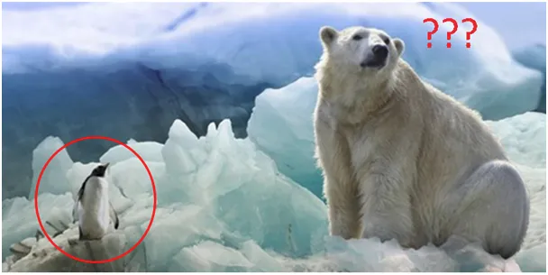

To się doczekaliśmy…
To się doczekaliśmy...
Poniżej urzędniczy ton i długa gadanina, ale chodzi o to, czy całkiem wycofać się ze stanowiska, że CO2 wpływa na klimat, czy może, że trochę wpływa na zdrowie. Biznes w USA żąda dowodów na wpływ CO2 na zmiany klimatu a Tych nie ma, wprost przeciwnie są dowody, że nie ma wpływu. Inwestorzy żądają odszkodowań za nieracjonalne koszty gospodarki niskoemisyjnej. Administracja Trumpa ich ośmieliła i USA już przestały śpiewać o dekarbonizacji. Prasa podaje to delikatnie, bo to był przewał tysiąclecia!
Doczekaliśmy się, ale jesteśmy w nieodpowiedniej organizacji międzynarodowej: UE.

23 lipca 2025 r. insideepa.com :
"Biały Dom stoi w obliczu podzielonych poglądów na temat zbliżającego się planu wycofania wyników badań EPA (Amerykańska Agencja Ochrony Środowiska) dotyczących emisji gazów cieplarnianych
Urzędnicy Białego Domu mierzą się z rozbieżnymi opiniami interesariuszy, ponieważ EPA wydaje się gotowa opublikować swoją propozycję uchylenia przełomowego orzeczenia z 2009 roku dotyczącego zagrożenia gazami cieplarnianymi. Urzędnicy z Indiany domagają się interpretacji prawnych agencji, które ograniczyłyby analizę do „bezpośrednich” skutków zdrowotnych gazów cieplarnianych, podczas gdy niektóre grupy branżowe proponują alternatywny plan złagodzenia przepisów dotyczących gazów cieplarnianych. "
"Gruby szwindel" https://pawelklimczewski.pl/2025/05/07/gruby-szwindel/
Paweł Klimczewski